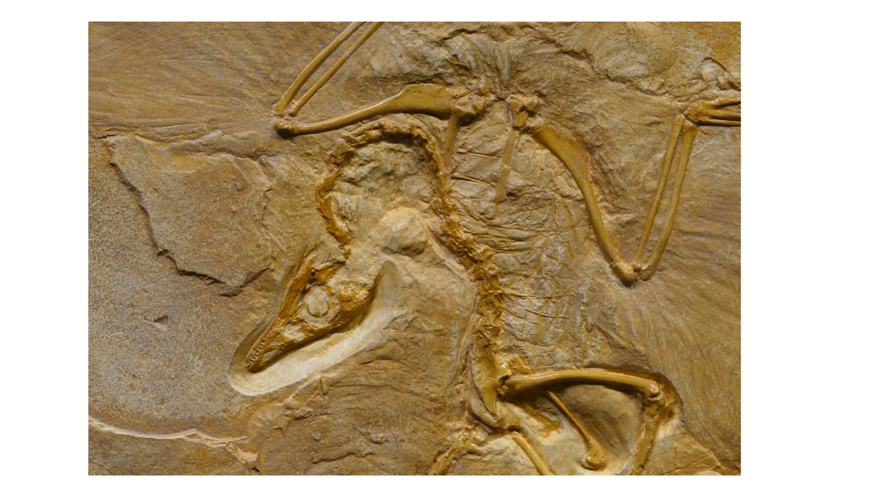

Inheritance of Acquired Characteristics
LAMARCKISM
Proposed by Jean-Baptiste Lamarck, Lamarckism suggests that organisms can pass on traits acquired during their lifetime to their offspring.
For example, Lamarck believed that giraffes' long necks evolved over generations because giraffes stretched their necks to reach high leaves, and this trait was then inherited by their offspring. Or if your parents worked out often at the gym, you would be born with the ability to become more muscular than if they had spent all their time watching TV.
Lamarck believed evolution was a slow, gradual process. However, this theory was discredited due to a lack of scientific evidence showing that acquired characteristics can be inherited.
Extinction and Replacement
CATASTROPHISM
Georges Cuvier's theory of catastrophism proposed that Earth's history is marked by periodic catastrophic events, such as floods or volcanic eruptions, which caused mass extinctions of species. According to this theory, after each catastrophe, new species appeared to replace those that were lost.
One classic example of catastrophism is the asteroid impact theory associated with the Cretaceous-Paleogene (K-Pg) extinction event approximately 66 million years ago.
Asteroid Impact: A massive asteroid, estimated to be about 10 kilometers in diameter, collided with Earth near what is now the Yucatán Peninsula in Mexico, creating the Chicxulub crater.
Immediate Consequences: The impact caused widespread fires, massive tsunamis, and an initial "impact winter" due to the vast amount of debris and aerosols thrown into the atmosphere, blocking sunlight.
Long-term Effects: This event led to drastic changes in climate and a significant drop in global temperatures. The reduction in sunlight would have severely impacted photosynthesis, disrupting food chains both on land and in the oceans.
Mass Extinction: As a result, approximately 75% of Earth's species, including most of the dinosaurs, became extinct. This catastrophic event caused a sudden and profound change in Earth's biodiversity.
New Species Emergence: In the aftermath, new species evolved and diversified to fill the ecological niches left vacant by the extinct species, marking a significant shift in the planet’s biological history.
This scenario illustrates catastrophism by showing how a single, sudden, and catastrophic event can cause mass extinctions and significantly alter the course of life on Earth. Over time, this idea lost favor as evidence accumulated for gradual geological and biological changes over long periods, supporting the concept of deep time.
Species Change Over Time
TRANSFORMISM
Transformism, supported by Jean-Baptiste Lamarck and Charles Lyell, suggests that species gradually change into new forms over time through a process of continuous adaptation to their environments. This theory posits that species are not fixed but evolve slowly as small changes accumulate over generations. For example, an animal might develop thicker fur in response to a colder climate, and over time, these adaptations can lead to significant differences and the emergence of new species. Transformism highlights evolution as an ongoing, dynamic process, contributing to the broader acceptance of evolutionary theory.
Design in Nature
NATURAL THEOLOGY
Natural theology, promoted by William Paley, argues that the complexity and design seen in nature indicate a divine creator. Just as a watch's intricate design suggests a watchmaker, the detailed structure of the human eye or the interdependence of ecosystems are viewed as evidence of intentional design. Natural theology seeks to reconcile scientific observations with belief in a divine creator, influencing debates on the relationship between science and religion, particularly regarding the origins and development of life.

Gradual Geological Processes
UNIFORMITARIANISM
Uniformitarianism, advocated by Charles Lyell, proposed that the Earth's landforms and geological features were shaped by slow, ongoing processes over long periods. This idea says that the same natural forces we see today, like erosion and volcanic activity, have been at work for millions of years. It means that big changes on Earth happened gradually, not suddenly. So, instead of thinking that huge disasters caused everything, uniformitarianism says that slow, regular forces made the Earth look like it does now.
Before Darwin, people had different ideas about how species change over time. These ideas, like Lamarckism and catastrophism, led to Darwin's big idea: evolution by natural selection. Darwin showed how species adapt to their environment over time. Even though earlier ideas had some issues, they helped set the stage for Darwin's big discovery. His work changed how we understand life's diversity today. So, even though those old ideas weren't perfect, they were important steps toward our modern understanding of evolution.
CHARLES DARWIN AND THE THEORY OF NATURAL SELECTION
Charles Darwin's theory of natural selection is a cornerstone of modern biology. His journey aboard the HMS Beagle from 1831 to 1836 was pivotal in shaping his ideas. While exploring the Galápagos Islands, Darwin noticed variations among finches that seemed adapted to different diets. This observation led him to propose the concept of natural selection, which he detailed in his 1859 book "On the Origin of Species."
In this groundbreaking work, Darwin introduced the idea that organisms with advantageous traits are more likely to survive and reproduce, passing on these traits to future generations. This process, known as survival of the fittest, drives adaptation and ultimately leads to the formation of new species. Darwin's theory of common descent suggests that all organisms share a common ancestor and have evolved over time through natural selection. These key concepts revolutionized our understanding of how life evolves and diversifies on Earth.